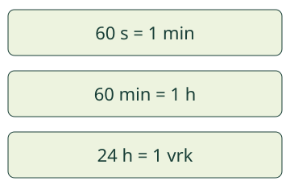

Aava ja Loikka ovat lautalla. Matka kestää 2 h 15 min. Montako minuuttia se on?
Aava ja Loikka ovat lautalla. Matka kestää 2 h 15 min. Montako minuuttia se on?
Sama aika, eri yksikkö
Ilmaisen saman keston eri aikayksiköillä. Tunnissa on 60 minuuttia. Minuutissa on 60 sekuntia. Aikayksiköt eivät vaihdu satasina.

Aava ja Loikka ovat lautalla. Matka kestää 2 h 15 min. Montako minuuttia se on?
Ilmaisen saman keston eri aikayksiköillä. Tunnissa on 60 minuuttia. Minuutissa on 60 sekuntia. Aikayksiköt eivät vaihdu satasina.

Jokainen tuntiosa on 60 min. Kaksi tuntia on 60 min + 60 min. Vielä 15 min lisää: 2 h 15 min = 135 min.
Ilman moduulia piirrä kaksi 60 minuutin osaa ja 15 minuutin lisäosa. Kokoa sama kesto eri tavoin. Mikään aika ei lisäänny yksikköä vaihdettaessa.
Ennusta: montako kokonaista tuntia saat 90 minuutista?
60 min tekee tunnin. Jäljelle jää 30 min. Siis 90 min = 1 h 30 min.
Tutki alla mallia, jossa on 1 tunti ja 30 lisäminuuttia. Vaihda tunti minuuteiksi ja kokoa se takaisin.
Malli on ilman JavaScriptiä alkuperäisessä kohdassaan: avaa mallin kohta.
1 h 30 min ei tarkoita 1,30 tuntia. Tunnin 60 minuutista 30 min on puolet: puolitoista tuntia on 1 h 30 min. Desimaaliluvun jälkiosa ei suoraan kerro minuutteja. Tätä ei tarvitse laskea desimaaleilla.
Kirjoita yksikkö luvun viereen. Minuuteiksi muuntaessa saat jokaisesta tunnista 60 min. Toiseen suuntaan kokoa 60 minuutin osat kokonaisiksi tunneiksi. Voit laskea osat yhteen ilman valmista kertolaskutaitoa. Malli ja harjoitus ovat erillisiä: mallin tutkiminen ei vaihda harjoituksen kysymystä.
Leiri kestää 2 vuorokautta. Vuorokausi on 24 h, joten 2 vuorokautta on 48 h. Minuuttiin taas kuuluu 60 s. Kokeile harjoituksen eri tilanteita: mikä yksikkösuhde juuri siinä tarvitaan?
Lautan kellonaikamalli on erillinen lisäkokeilu. Se näyttää 30 malliminuuttia nopeutettuna. Kellonaika ja matkan kesto ovat eri asioita:9.45 on lähtöhetki, 30 min on matkan kesto. Kellonaikaa ei tarvitse osata lukea viisareista, sillä numeronäyttö ja aloitus selitetään.
Vuosiluokat 3–6, vaadittu esitieto M-TIME-03. Kertominen ja jakaminen tukevat käytettyä muunnossuuntaa; niitä ei muuteta uusiksi kaikille pakollisiksi graafiehdoiksi. Osien yhteenlasku ja 60 minuutin ryhmittely tarjoavat näkyvän sillan. Kellonajan siirto on valinnainen ja kellomerkinnän merkitys opetetaan siinä. Muut aikamuunnokset eivät edellytä kellotaulun lukua.
Malli vaihtaa yksikön esitystä säilyttäen kokonaiskeston. Tuntiosien toisto ei ole ajan kulumisen mittaus. Erillinen lauttakello on nopeutettu: 1 toistosekunti vastaa 10 malliminuuttia, manuaalinen askel 5 malliminuuttia. Tauko pysäyttää molemmat mallit; jatkaminen ei aloita toistoa itsestään. Lukema sekä viisarit johdetaan samasta minuuttitotuudesta. Kello pysähtyy matkan loppuun.
Harjoitus tarkistaa syötetyn lukuesityksen näissä rajatuissa tilanteissa. Samanarvoinen mutta vielä ryhmittelemätön 90 min hyväksytään samaksi kestoksi ja pyydetään kokoamaan tuntiosa. Ei päätelmää itsenäisestä, viivästetystä hallinnasta tai käytännön mittaustaidosta; mitään henkilöhistoriaa ei tallenneta. Ihmisarviota ei ole tehty.
Ilman laitetta käytä 60 minuutin ja pienempiä minuuttiosia esittäviä paperilappuja. Lapun 60 min voi vaihtaa 1 h -lappuun ja takaisin. Tämä on yksiköiden esittämistä, ei lupaus että oppija kokee tunnin keston muutamassa sekunnissa. Kuukausien pituuksia tai kalenterin erityistilanteita ei päätellä tästä rajatusta kestomallista.
Lopuksi: miksi 2 tuntia on 120 minuuttia, ei 200 minuuttia?